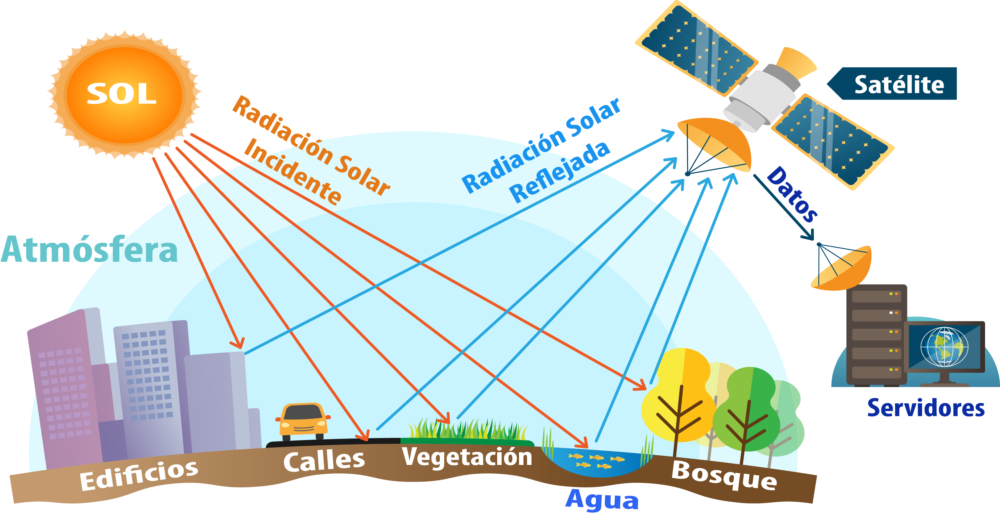
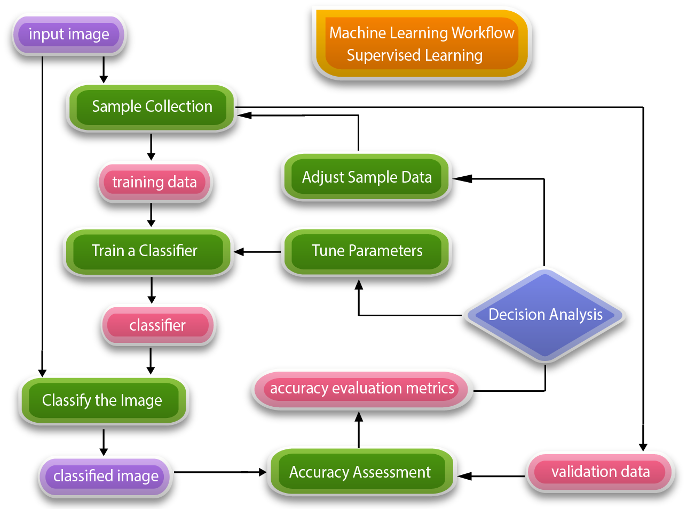

from IPython.display import Image
Image(filename='imagenes/GEE.png', width=336, height=48)
Teledetección y GeoIA#
Bienvenidos en este capítulo exploraremos cómo el aprendizaje automático está revolucionando la teledetección y el trabajo en la nube y mostraremos un ejemplo práctico de aprendizaje automático supervisado con Random Forest. El capítulo se estructura en tres partes en la primera parte comenzaremos haciendo una breve reseña sobre teledetección luego en la segunda parte abordaremos técnicas de aprendizaje automático o Machine learning aplicadas a imágenes satelitales, en la tercera parte mostraremos un ejemplo concreto de la técnica Random Forest a una composición de imágenes sobre un área de estudio. Comenzaremos haciendo una pequeña reseña sobre teledetección:
Teledetección#
La teledetección es la ciencia de obtener información sobre objetos o áreas a distancia mediante el uso de satélites aeronaves o drones.
Jensen, John R. en su libro Remote Sensing of the Environment: An Earth Resource Perspective (2007) define la teledetección como: “La ciencia y el arte de obtener información sobre un objeto, área o fenómeno mediante el análisis de datos adquiridos por un dispositivo que no está en contacto con el objeto, área o fenómeno en estudio.”
Remote Sensing and Image Interpretation (2015), Lillesand, Kiefer y Chipman definen la teledetección como:
“La teledetección es el proceso de adquirir información sobre las propiedades de los objetos en la superficie terrestre sin estar en contacto físico con ellos. Esto se logra detectando y analizando la radiación reflejada o emitida por esos objetos, utilizando sensores montados en plataformas remotas, como satélites o aeronaves.”
Esta disciplina se ha convertido en una herramienta esencial para entender nuestro entorno y tomar decisiones fundamentadas en múltiples campos. Entre sus principales propósitos se encuentran:
La Generación de mapas de uso del suelo y cobertura del suelo (LULC, por sus siglas en inglés), una práctica clave para monitorear el crecimiento urbano, la planificación urbana sostenible y la identificación de cambios en el paisaje.
La Detección de cambios ambientales, como la expansión urbana, las variaciones en la vegetación, los cultivos, y los cuerpos de agua.
El Control del impacto de la urbanización, especialmente en áreas preurbanas y sensibles al cambio ambiental.
Con la democratización del acceso a imágenes satelitales, plataformas como Google Earth Engine y hubs como Copernicus ofrecen recursos gratuitos y accesibles que eliminan las barreras de entrada para realizar análisis geoespaciales. Ya no hay excusas: hoy en día, cualquier persona con conocimientos básicos puede acceder a datos satelitales para abordar problemas ambientales, monitorear el crecimiento urbano o evaluar la salud de los ecosistemas.
Además, gracias a las capacidades de procesamiento en la nube, podemos llevar a cabo estudios a escalas regionales y nacionales sin la necesidad de infraestructuras complejas. Esto abre un abanico de posibilidades para investigadores, profesionales y tomadores de decisiones que buscan soluciones sostenibles basadas en datos confiables y actualizados.
Como indicamos anteriormente este capítulo se enfocará en el uso del aprendizaje automático en teledetección y mostraremos un ejemplo en el cual aplicamos aprendizaje supervisado con árboles aleatorios o Random Forest.

El aprendizaje automático se ha consolidado como una herramienta ideal para resolver problemas complejos en teledetección, principalmente porque aborda de manera eficiente la clasificación y detección de objetos o materiales en imágenes satelitales (por ejemplo detectar vegetación, agua, edificios, carreteras). Estos problemas, como identificar tipos de cobertura terrestre o distinguir entre características específicas, presentan desafíos significativos cuando se intentan resolver mediante métodos analíticos tradicionales.
Existen algunos desafíos de los Datos de Observación Terrestre:
Los datos satelitales, aunque ricos en información, están inherentemente sujetos a ruido y variabilidad:
Ruido atmosférico y del sensor: Los satélites operan a cientos de kilómetros de altitud, capturando datos a través de múltiples interferencias atmosféricas. Este entorno introduce desviaciones en las mediciones de reflectancia.
Variabilidad temporal y espacial: Las mismas condiciones en diferentes días pueden generar valores de reflectancia ligeramente distintos debido a factores ambientales y limitaciones instrumentales.
Dimensionalidad de los datos: Las imágenes de teledetección suelen incluir múltiples bandas espectrales, lo que genera un espacio de características de alta dimensionalidad que dificulta la creación de reglas manuales para clasificar objetos con precisión.
Ventajas del Aprendizaje Automático:
El aprendizaje automático supera estos desafíos al modelar relaciones complejas entre las bandas espectrales y los objetos de interés, sin requerir que el usuario formule reglas explícitas. En su lugar, utiliza datos etiquetados de campo para entrenar modelos, a estos datos etiqeutados de campo se los suele denominar “verdad terrestre”. A partir de estas etiquetas los algoritmos de aprendizaje automático:
Aprenden patrones espectrales: es decir, Identifican combinaciones óptimas de bandas espectrales para clasificar materiales específicos, como agua o vegetación, a pesar del ruido.
Se adaptan a la variabilidad: Los modelos pueden generalizar patrones, tolerando pequeñas variaciones en los datos de entrada sin comprometer la precisión.
Un Enfoque Práctico:
Por ejemplo, si el objetivo es detectar agua, sería ideal medir directamente las propiedades espectrales del agua en el campo. Sin embargo, debido al ruido y la complejidad inherente de los datos satelitales, un modelo de aprendizaje automático entrenado con datos de referencia puede inferir las reglas necesarias para identificar agua con alta precisión, incluso cuando las condiciones no son ideales.
Conclusión: En el contexto de teledetección, el aprendizaje automático no solo simplifica el manejo de datos complejos y ruidosos, sino que también proporciona una robustez y adaptabilidad que los métodos tradicionales no pueden igualar. Este enfoque representa un cambio de paradigma: en lugar de tratar de definir manualmente las reglas de clasificación, delegamos esta tarea a algoritmos capaces de extraer patrones directamente de los datos.
Clasificación y aprendizaje automático en teledetección#
El aprendizaje automático (en inglés ML ó Machine learning) ofrece dos enfoques principales para abordar problemas en teledetección: aprendizaje supervisado y no supervisado. Cada uno tiene aplicaciones específicas y ventajas según el caso de uso: Aprendizaje no supervisado y Aprendizaje supervisado.
Aprendizaje o supervisado#
Este método implica proporcionar los datos al algoritmo sin etiquetas previas. Los algoritmos no supervisados agrupan los datos en categorías basadas en similitudes internas, como los valores de reflectancia en imágenes satelitales. Por ejemplo, algoritmos como k-means clustering o SNCC identifican agrupaciones de píxeles con características espectrales similares, pero no asignan significado alguno a esos grupos; esta tarea recae en el analista o en otro modelo.
Aunque el aprendizaje no supervisado es útil para encontrar patrones en datos complejos, tiene limitaciones. La interpretación y etiquetado posterior de los grupos requieren un esfuerzo significativo, lo que lo convierte más en una herramienta inicial o complementaria que en una solución completa. En teledetección, se utiliza comúnmente para la clasificación basada en objetos, donde se combinan agrupaciones no supervisadas con métodos supervisados.
Aprendizaje supervisado#
El aprendizaje supervisado, por otro lado, requiere datos previamente etiquetados. Por ejemplo, para clasificar agua en una imagen satelital, es necesario identificar y etiquetar píxeles de muestra representativos de agua y no agua. Estos datos de entrenamiento alimentan al algoritmo, que aprende a generalizar y clasificar el resto de la imagen. Algoritmos como regresión logística, bosques aleatorios (random forest) y otros modelos de clasificación supervisada son ampliamente utilizados.
En la práctica, la clasificación supervisada es la técnica predominante, ya que permite asignar etiquetas claras a cada píxel, crucial para cuantificaciones precisas y análisis detallados. Su flujo de trabajo típico incluye:
Selección de de datos de entrenamiento
Entrenamiento de un clasificador
Clasificación de la imagen
Evaluación de precisión
Refinamiento iterativo mediante ajustes de parámetros o mejora de los datos de entrada

Consideraciones prácticas#
Aunque el aprendizaje automático simplifica el manejo de datos complejos, no siempre es la mejor opción. Métodos tradicionales como los sistemas expertos, que emplean fórmulas derivadas de las propiedades físicas del terreno, son preferibles en ciertos casos, especialmente cuando se trabaja con pocos parámetros (bandas espectrales). Por ejemplo, el conjunto de datos global Global Surface Water, basado en un sistema experto, supera a los métodos de Aprendizaje automático en la detección de agua en imágenes Landsat a escala global.
La elección entre un sistema experto y Aprendizaje automático depende del problema en cuestión. Los sistemas expertos destacan por su transparencia y simplicidad en problemas bien definidos, mientras que el Aprendizaje automático se adapta mejor a datos complejos y ruidosos, descubriendo patrones ocultos sin necesidad de reglas explícitas.
Ejemplo práctico: Clasificación binaria#
Para ilustrar el proceso de aprendizaje supervisado, consideremos una clasificación binaria: detectar agua frente a no agua. Supongamos que seleccionamos píxeles representativos (50 de agua y 50 de no agua) y extraemos sus valores de reflectancia en dos bandas (verde e infrarrojo). Estos datos se organizan en una tabla de entrenamiento, donde cada fila representa un píxel y contiene sus valores espectrales y etiqueta correspondiente.
Un modelo entrenado con estos datos aprenderá a predecir la clase de nuevos píxeles basándose en sus reflectancias. Este proceso es escalable a problemas más complejos, como clasificaciones multiclase (ej., vegetación, suelo desnudo, agua) y análisis multiespectral.
Conclusión#
La mayoría de las aplicaciones de teledetección implican algún tipo de clasificación supervisada, ya que permiten convertir imágenes en mapas clasificados, útiles para responder preguntas clave como: ¿Qué porcentaje de la ciudad está cubierto por árboles? o ¿Cuál es el área urbanizada en crecimiento?
Aunque ambos enfoques (supervisado y no supervisado) tienen un lugar en el análisis de teledetección, comprender sus fortalezas y limitaciones es esencial para elegir la estrategia adecuada en cada caso. Al final, la combinación de ambos métodos, junto con sistemas expertos, puede ofrecer resultados más robustos y confiables.
El aprendizaje automático se ha convertido en una herramienta imprescindible en teledetección, particularmente para resolver problemas de clasificación. Una aplicación común es identificar qué píxeles en una imagen satelital representan cuerpos de agua y cuáles corresponden a otras superficies. Para abordar estas tareas, se han desarrollado diversos algoritmos, cada uno con fortalezas particulares. Entre ellos, destacan las Máquinas de Soporte Vectorial (SVM), los árboles de decisión y el algoritmo Random Forest, que han transformado la manera en que se procesan y analizan los datos satelitales.
Durante años, las Máquinas de Soporte Vectorial se posicionaron como una de las herramientas preferidas en teledetección, especialmente en problemas de clasificación binaria. Este algoritmo, conocido por su precisión, construye un hiperplano que separa de forma óptima dos clases de datos en un espacio multidimensional. Por ejemplo, en dos dimensiones, esta separación se traduce en una línea, mientras que en tres dimensiones, se convierte en un plano. El modelo aprende a clasificar datos a partir de ejemplos etiquetados, ajustando el hiperplano para maximizar la distancia entre las dos clases. Una vez entrenado, puede determinar la clase de un nuevo píxel simplemente evaluando en qué lado del hiperplano se encuentra. Sin embargo, a pesar de su efectividad en problemas simples, las SVM enfrentan limitaciones cuando se aplican a tareas que involucran múltiples clases, lo que redujo su protagonismo a medida que surgieron enfoques más versátiles.
Con el tiempo, los árboles de decisión comenzaron a ganar terreno como una alternativa más flexible y adaptativa. A diferencia de las SVM, los árboles de decisión no se limitan a dos clases y son capaces de manejar problemas multiclase de forma natural. Este algoritmo utiliza un enfoque basado en reglas, en el que los datos son clasificados mediante un proceso de decisiones jerárquicas. Cada nodo en el árbol representa una condición, como un umbral de reflectancia, y las ramas llevan a diferentes resultados según las características de los datos. Al final, cada píxel es asignado a una clase con base en su recorrido por el árbol. Esta estructura no solo es eficaz, sino también intuitiva, ya que las reglas generadas por el modelo pueden interpretarse con facilidad. Además, su capacidad para realizar regresiones amplía su utilidad a problemas más complejos, como la estimación de rendimientos agrícolas. Sin embargo, su principal desafío radica en el sobreajuste: cuando un árbol se adapta demasiado a los datos de entrenamiento, pierde capacidad para generalizar en nuevos contextos.
Para superar estas limitaciones, surgió Random Forest, un algoritmo que revolucionó el uso de los árboles de decisión mediante un enfoque de aprendizaje en conjunto. En lugar de construir un único árbol, Random Forest genera múltiples árboles independientes, cada uno entrenado con un subconjunto aleatorio de los datos. Si bien cada árbol puede ser propenso al sobreajuste, el algoritmo combina sus predicciones mediante un proceso de votación mayoritaria, logrando así un modelo final más robusto y preciso. Este enfoque, inspirado en la “sabiduría de las multitudes”, ha demostrado ser particularmente eficaz en teledetección, donde la diversidad de los datos suele complicar el análisis. Además de su capacidad para manejar ruido y datos complejos, Random Forest se adapta fácilmente a problemas multiclase, consolidándose como una herramienta versátil y confiable.
A lo largo de los años, la evolución de los algoritmos en teledetección ha reflejado un cambio significativo en las preferencias y necesidades de la comunidad científica. Aunque las SVM continúan siendo útiles para problemas específicos, como las clasificaciones binarias, Random Forest se ha establecido como el estándar para tareas más complejas y de mayor escala. Este algoritmo no solo garantiza precisión y robustez, sino que también permite ajustes personalizados y evaluaciones de rendimiento, adaptándose a los requisitos de cada proyecto. Su integración en plataformas como Google Earth Engine lo ha convertido en una opción accesible y eficaz para usuarios de diferentes niveles de experiencia, marcando el punto de partida ideal para explorar técnicas más avanzadas.
Para clasificar píxeles en una imagen satelital, supongamos que tenemos un conjunto de datos inicial compuesto por 100 píxeles. Cada píxel tiene dos valores asociados, correspondientes a las reflectancias en las bandas verde e infrarroja cercana (NIR). Además, sabemos qué píxeles representan agua (etiquetados como “agua”) y cuáles no (etiquetados como “no agua”).
El objetivo es entrenar un modelo que, con base en las reflectancias, pueda clasificar todos los píxeles de la imagen en una de estas dos categorías.
Maquina de Soporte Vectorial (SVM)#
A continuación, exploraremos cómo funciona la tecnica maquinas de soporte vectorial o SVM
Entrenamiento:#
SVM es un modelo adecuado para problemas con dos clases (en este caso, agua y no agua). Durante el entrenamiento, SVM busca una línea (o un plano en dimensiones superiores) que separe los píxeles etiquetados como “agua” de los etiquetados como “no agua”.
En un gráfico 2D, con la reflectancia de la banda verde en el eje X y la reflectancia de la banda NIR en el eje Y, SVM encuentra la línea que mejor separa los dos grupos.
En un grafico 3D en lugar de linea empleamos un plano.
Predicción:#
Una vez entrenado, el modelo usa esta línea para clasificar nuevos píxeles:
Si un píxel tiene valores que caen por debajo de la línea, se clasifica como “agua”.
Si está por encima, se clasifica como “no agua”.
SVM es eficaz, simple y rápido para este tipo de problemas binarios.
Ahora mostraremos de manera esquemática como se emplea Arboles de decisión a nuestro ejemplo sencillo de clasificación binaria (agua /no agua):
Árboles de Decisión#
Entrenamiento:#
Los Árboles de Decisión dividen los datos en pasos secuenciales basados en umbrales en los valores de las bandas. Por ejemplo, el modelo puede establecer que un píxel es “agua” si su reflectancia en la banda verde es menor que un valor X y su reflectancia en la banda infrarroja cercana es menor que un valor Y. Estas reglas se organizan en un flujo lógico (un diagrama de árbol), donde cada bifurcación representa una decisión basada en un umbral.
Predicción:#
Para clasificar un píxel, se sigue el flujo del árbol: Se verifican las condiciones establecidas en cada nodo. Al final, se llega a una hoja que indica la clase del píxel (agua o no agua).
Ventajas y limitaciones:#
Los Árboles de Decisión son fáciles de interpretar porque el modelo resulta en un diagrama explicativo. Sin embargo, tienen un problema conocido como sobreajuste: si los datos de entrenamiento contienen ruido, el árbol puede volverse excesivamente complejo al intentar ajustarse a datos irrelevantes.
Para mitigar el sobreajuste, se pueden podar ramas del árbol, limitar la profundidad máxima o emplear métodos como Random Forest, que combinan múltiples árboles para mejorar la generalización.
Pasos en la aplicacion de ML a imágenes satelitales.#
La clasificación de imágenes satelitales es una técnica fundamental en teledetección, y uno de los enfoques más comunes es dividir el territorio en categorías específicas, como urbano, suelo desnudo, agua y vegetación. Este proceso comienza identificando los píxeles correspondientes a cada una de estas clases dentro de una imagen satelital. Para ello, es esencial recolectar datos de entrenamiento representativos que permitan entrenar un modelo de clasificación eficaz.
En este caso, trabajamos con imágenes de la ciudad de Rosario, utilizando datos del satélite Sentinel-2. La imagen compuesta que tenemos es un mosaico anual, una herramienta particularmente útil, ya que elimina la interferencia de nubes y asegura que todos los píxeles sean claros y legibles. El objetivo es clasificar esta imagen en cuatro clases principales: urbano, suelo desnudo, agua y vegetación. A medida que avanzamos, aprenderemos a implementar este proceso en código, con la meta final de que cada participante pueda replicar el ejemplo en su ciudad.
El primer paso crucial es la recolección de datos de entrenamiento. Para ello, necesitamos etiquetar manualmente ejemplos de cada una de las cuatro clases en nuestra imagen. Por motivos de eficiencia, las etiquetas no se asignan como texto, sino como valores numéricos: los píxeles urbanos se etiquetan como 0, los de suelo desnudo como 1, los de agua como 2 y los de vegetación como 3. Esta codificación facilita el procesamiento por parte del modelo y asegura un manejo eficiente de las clases.
El primer paso es crear una nueva capa. Haz clic en “Nueva capa”. Por defecto, el tipo será geometría, pero iremos a la configuración y cambiaremos esto a una colección de características (feature collection). Nombraremos esta capa como “urbano”, y agregaremos una propiedad llamada land cover. Para esta clase, definiremos que land cover = 0 corresponde a edificios, superficie construida, como edificios, carreteras y otras superficies impermeables
Al recolectar datos de entrenamiento, es fundamental ser preciso. Por ejemplo, para identificar áreas urbanas, definimos esta categoría como cualquier superficie mencionada recién, superf. construida, edificios, carreteras y otras superficies impermeables. Utilizando las herramientas de dibujo disponibles, como marcadores o puntos, seleccionamos manualmente píxeles que representen estas áreas. Es esencial hacer esto con cuidado, asegurándonos de que los puntos se coloquen exactamente sobre píxeles urbanos, evitando errores como etiquetar un árbol o vegetación cercana.
Además, es útil contar con mapas base de alta resolución como referencia. Sin embargo, estos deben utilizarse con precaución, ya que las imágenes de los mapas base pueden corresponder a fechas diferentes a las de nuestra imagen satelital. Por ejemplo, un edificio visible en el mapa base puede no existir en la imagen satelital actual. Por lo tanto, siempre debemos priorizar la referencia directa de nuestra imagen satelital.
Una vez que recolectamos ejemplos representativos de píxeles urbanos, repetimos el proceso para las demás clases: suelo desnudo, agua y vegetación. La calidad y la representatividad de estos datos de entrenamiento son cruciales, ya que los algoritmos de aprendizaje automático tratan los datos de entrada como verdades absolutas. Cualquier error en esta etapa puede traducirse en un modelo impreciso y resultados incorrectos.
Aunque existe la posibilidad de utilizar polígonos para generar automáticamente múltiples ejemplos de entrenamiento, esta práctica debe evitarse. Cuando un polígono incluye píxeles de diferentes clases, el modelo puede recibir información incorrecta y generalizar de manera inexacta. Por ello, la recolección manual y cuidadosa de puntos individuales es siempre preferible, aunque sea más laboriosa.
El aprendizaje automático, aunque automatiza muchos procesos, requiere una inversión significativa en tiempo y esfuerzo para recolectar y limpiar los datos de entrada. Este trabajo manual es la base de un modelo exitoso. Una vez que los datos están listos, el resto del proceso, como la implementación del modelo y la clasificación, es relativamente sencillo y eficiente. Clasificación de Datos y Entrenamiento de un Modelo en Google Earth Engine
Bien, ahora que hemos recopilado todos los datos para los puntos de la clase urbana, pasaremos a la siguiente clase: terrenos desnudos. El primer paso es crear una nueva capa. Haz clic en “Nueva capa”. Por defecto, el tipo será geometría, pero iremos a la configuración y cambiaremos esto a una colección de características (feature collection). Nombraremos esta capa como “superficieDesnuda”, y agregaremos una propiedad llamada land cover. Para esta clase, definiremos que land cover = 1 corresponde a terrenos desnudos. También puedes cambiar los colores de la capa si lo deseas para facilitar su visualización.
Ahora, con esta nueva colección configurada, comenzaremos a marcar puntos en las superficiesDesnudas.
Definimos terreno desnudo como cualquier píxel que representa suelo expuesto, sin construcciones ni vegetación, únicamente tierra desnuda. Utilizando la herramienta de marcador, selecciona la capa de terrenos desnudos y comienza a colocar puntos en las áreas correspondientes. Por ejemplo, este píxel representa suelo desnudo, y podemos marcarlo como tal.
Si la ciudad o región que estás clasificando no tiene áreas de suelo desnudo, está bien omitir esta clase. Hay regiones donde no es común encontrar suelos expuestos, donde prácticamente no hay áreas de tierra desnuda.
Aseguráte de recopilar datos de diferentes partes de la ciudad que correspondan a la misma clase para garantizar que el modelo capture la variabilidad dentro de esa categoría. Mientras marcas puntos para una clase, si identificas un ejemplo claro de otra clase, puedes cambiar de capa y marcar ese punto también.
Del mismo modo, crearemos capas para las clases de agua y vegetación. Una vez que hayamos terminado, tendremos algo como esto: una colección de muestras de entrenamiento para cada clase. Estas muestras estarán bien distribuidas por la región de interés, con alrededor de 10 puntos por clase para áreas pequeñas. Para regiones más grandes, se recomienda aumentar la cantidad de puntos.
Unificando Muestras de Entrenamiento#
Ahora que hemos etiquetado cada clase con valores únicos (0 para urbano, 1 para terreno desnudo, 2 para agua, y 3 para vegetación), necesitamos combinar todas estas muestras en una sola colección de entrenamiento. Esto simplificará el proceso de clasificación.
Definiremos una variable llamada GCP (Ground Control Points, puntos de control en tierra), que contendrá nuestras muestras de entrenamiento. Usaremos la función merge para combinar las capas: primero la urbana, luego la de terrenos desnudos, después la de agua y finalmente la de vegetación. Ahora, GCP será una única colección que incluye todas las muestras de entrenamiento.
Esta colección tiene una única propiedad llamada land cover, que es la etiqueta de clase. Sin embargo, aún necesitamos asociar las reflectancias espectrales de cada píxel en nuestra imagen compuesta a estas etiquetas.
Extracción de Valores de Píxeles#
El siguiente paso es extraer los valores espectrales de los píxeles en nuestra imagen compuesta. Esto se hace con la función sampleRegions, que toma la imagen y las geometrías de nuestras muestras de entrenamiento. Configuraremos la función para mantener solo la propiedad land cover y definiremos una escala de muestreo acorde a la resolución de Sentinel-2 (10 metros).
Después de ejecutar esta función, cada muestra de entrenamiento incluirá los valores espectrales de las 12 bandas de la imagen, junto con su etiqueta de clase. Esto nos proporciona una tabla donde cada fila corresponde a un píxel de entrenamiento y cada columna representa las bandas espectrales. Esta tabla será usada para entrenar el modelo de clasificación.
Entrenamiento del Clasificador#
Para entrenar el modelo, utilizaremos un clasificador de bosque aleatorio (Random Forest). En Earth Engine, esto se hace con la función ee.Classifier.smileRandomForest. Inicializaremos el clasificador con un número arbitrario de árboles, por ejemplo, 50. Más adelante, podremos optimizar este valor utilizando técnicas de ajuste de hiperparámetros.
El clasificador se entrena llamando a la función train, donde especificamos:
Las propiedades de entrada (los nombres de las bandas espectrales).
La propiedad objetivo (land cover). Una vez entrenado, el clasificador estará listo para predecir las etiquetas de clase en los píxeles no etiquetados de nuestra imagen.
Clasificación de la Imagen#
Tomamos nuestra imagen compuesta y aplicamos el clasificador con la función classify. Esto genera una nueva imagen clasificada, donde cada píxel tiene un valor correspondiente a una de las clases (0, 1, 2 o 3).
Para visualizar la imagen clasificada, definimos parámetros de visualización (visParams) que incluyan:
Rango de valores (min = 0, max = 3).
Una paleta de colores que facilite identificar las diferentes clases.
Al final, tendremos una representación visual clara de la clasificación, con cada clase distinguible por su color. Esto completa el proceso básico de clasificación supervisada utilizando Google Earth Engine.
Cualquiera sea el color que especifiques aquí, corresponderá a la clase cero, clase uno, clase dos y clase tres. Ahora, vamos a añadirlo al mapa, específicamente a la imagen clasificada, utilizando este parámetro.
Cuando ejecuto este proceso, GEE procederá a entrenar el modelo con la imagen clasificada. Esto implica que GEE entrenará el modelo utilizando los datos proporcionados, realizará las predicciones para cada clase y generará los resultados correspondientes. A continuación, quiero recortar los datos a la geometría con la que hemos entrenado el modelo, y así podrás observar los resultados obtenidos.
Al ejecutar la función, EE realizará la predicción para cada píxel, asignando a cada uno su clase correspondiente. Como resultado, verás la imagen clasificada final. A medida que realizas zoom en la imagen, EE continuará con la clasificación en tiempo real, previendo el valor de cada clase en cada píxel. Incluso con las pocas muestras de entrenamiento recolectadas en apenas unos minutos, el modelo tiene un rendimiento bastante bueno, logrando clasificar la imagen de manera precisa.
La clasificación se realiza de forma eficiente, con una detección precisa de píxeles correspondientes a áreas urbanas, cuerpos de agua y vegetación, lo que demuestra el poder del aprendizaje automático y la computación en la nube. Lo interesante de este enfoque es que, utilizando una cantidad mínima de muestras de entrenamiento, es posible crear un modelo que clasifica cada píxel en la imagen en tiempo real, gracias a las capacidades de procesamiento paralelo en la nube. No es necesario descargar datos ni esperar largos tiempos de cómputo.
El algoritmo que utilizamos es el clasificador de bosques aleatorios, basado en una biblioteca de código abierto llamada SMILE, que implementa diversos algoritmos de aprendizaje automático. Dado que el backend de Earth Engine está desarrollado en Java, al ejecutar esta función, se utiliza dicha biblioteca para construir el modelo de bosques aleatorios y emplearlo en las predicciones. Este flujo de trabajo se basa completamente en modelos y herramientas de código abierto, lo que proporciona una gran flexibilidad.
Lo que Earth Engine aporta es la capacidad de realizar estos procesos en tiempo real y a gran escala. Esto significa que, mientras que en un entorno local podría tomar meses realizar una clasificación a nivel nacional, en Earth Engine se puede hacer en tiempo real.
Algunas recomendaciones para optimizar la recolección de datos son las siguientes:#
Usar imágenes Sentinel-2 como referencia. Asegúrate de utilizar imágenes de Sentinel-2 para seleccionar las muestras de entrenamiento, ya que las imágenes de alta resolución pueden no coincidir temporalmente con las imágenes de Sentinel-2, lo que podría afectar la precisión del modelo.
Distribuir las muestras de entrenamiento de manera equitativa. Asegúrate de tomar puntos de entrenamiento distribuidos por toda la ciudad y, especialmente, en las calles. Un error común es confundir cuerpos de agua con áreas urbanas oscuras.
Evitar muestras mixtas. No utilices píxeles mixtos para el entrenamiento. Intenta seleccionar ejemplos puros de agua, vegetación, áreas urbanas y terrenos áridos. Deja que el modelo se encargue de los píxeles mixtos.
Evaluación de la Precisión#
Una vez que completes la clasificación, es fundamental evaluar cuán precisa es la clasificación realizada. ¿Está el modelo generando resultados satisfactorios? ¿Es el modelo perfecto? ¿Está alcanzando una precisión del 100% o solo un 90%? Si deseas mejorar la clasificación, ¿cuánto influiría recolectar 100 muestras de entrenamiento adicionales? ¿Mejoraría la precisión o no tendría un impacto significativo?
La evaluación de la precisión es un paso crucial en el análisis de cualquier modelo. Una técnica común es la validación cruzada, que consiste en dividir los datos de entrenamiento en dos subconjuntos: uno para entrenar el modelo y otro para validar las predicciones. Por ejemplo, se podría usar el 60% de los datos para entrenar y el 40% restante para validar.
El objetivo es medir el rendimiento del modelo en el subconjunto de validación, que contiene muestras que no se han usado en el entrenamiento. Se compara la predicción del modelo con el valor real de cada muestra de validación. Si el modelo clasifica correctamente un píxel, se considera que el modelo ha hecho una predicción acertada.
A partir de esto, podemos generar una matriz de confusión, que muestra las predicciones del modelo frente a las clases reales. Esta matriz nos permite visualizar cuántos píxeles fueron correctamente clasificados (diagonal principal) y cuántos fueron confundidos entre diferentes clases (fuera de la diagonal). A partir de esta matriz, se pueden calcular varias métricas de precisión, tales como la precisión global, que es el porcentaje de píxeles correctamente clasificados, así como la precisión del consumidor y la precisión del productor, que se refieren a la capacidad del modelo para identificar correctamente cada clase.
Otras métricas incluyen el coeficiente Kappa, que mide la concordancia entre las predicciones del modelo y la clasificación aleatoria, y el F-score, que es una medida combinada de la precisión y el recall. En general, la precisión global es la métrica más utilizada en el análisis de precisión, aunque el F-score también es común en el campo del aprendizaje automático.
Earth Engine permite calcular todas estas métricas y compararlas fácilmente para evaluar el rendimiento del modelo. Si la matriz de confusión muestra valores elevados fuera de la diagonal, eso indica que el modelo está teniendo dificultades con ciertas clases. En ese caso, se puede recolectar más datos para las clases problemáticas o ajustar los parámetros del modelo para mejorar la clasificación.
Al revisar la matriz de confusión, si se observa que hay una alta confusión entre ciertas clases, como entre agua y vegetación, es posible revisar las muestras de entrenamiento para esas clases específicas, añadiendo más ejemplos representativos y reduciendo el solapamiento entre clases.
Una vez que estemos satisfechos con los resultados de la clasificación y la precisión, podemos comenzar a optimizar el modelo, ajustando parámetros y evaluando nuevas muestras de entrenamiento para mejorar la precisión general.
Conclusión#
El aprendizaje automático no solo transforma datos en conocimiento accionable también redefine nuestra capacidad para comprender y gestionar entornos complejos. Herramientas como las máquinas de soporte vectorial, árboles de decisión y Random Forest nos brindan la precisión necesaria para abordar desafíos reales como el análisis del uso de suelo y la planificación territorial. En este ejemplo aplicado al área metropolitana de Rosario Random Forest demostró ser una herramienta poderosa capaz de clasificar grandes extensiones de territorio con una precisión sobresaliente esto no solo mejora nuestra visión científica del entorno sino que también apoya la toma de decisiones fundamentadas en evidencia.
El futuro del Análisis Geoespacial está aquí combinando algoritmos robustos y datos satelitales podemos planificar un desarrollo sostenible que beneficie a las generaciones actuales y futuras. Gracias por acompañarnos en este recorrido acerca del aprendizaje automático aplicado análisis territorial, sigamos impulsando el conocimiento y la acción en favor de nuestro entorno.
Sobre este libro#
El objetivo de este libro digital es impulsar el desarrollo de capacidades sobre cómo emplear tecnicas de geoIA con información geoespacial, principalmente empleando imágenes satelitales disponibles en Google Earth Engine.
Este libro interactivo digital está siendo desarrollado con Jupyter Book documentation y tendrá ISBN tramitado por IDERA-IGN.